Author: Lukas Hörtnagl (holukas@ethz.ch)
IMPORTS#
This notebook uses
diive(source code) to check eddy covariance fluxes for quality
import importlib.metadata
import warnings
from datetime import datetime
from pathlib import Path
import matplotlib.pyplot as plt
import pandas as pd
import scipy.stats
import seaborn as sns
from diive.core.dfun.stats import sstats # Time series stats
from diive.core.io.files import save_parquet, load_parquet
from diive.core.plotting.timeseries import TimeSeries # For simple (interactive) time series plotting
from diive.pkgs.flux.hqflux import analyze_highest_quality_flux
from diive.pkgs.fluxprocessingchain.fluxprocessingchain import FluxProcessingChain
from diive.pkgs.fluxprocessingchain.fluxprocessingchain import LoadEddyProOutputFiles
warnings.filterwarnings(action='ignore', category=FutureWarning)
warnings.filterwarnings(action='ignore', category=UserWarning)
version_diive = importlib.metadata.version("diive")
print(f"diive version: v{version_diive}")
diive version: v0.86.0
LOAD DATA (2 options)#
Option 2: Load data from parquet file#
Can be used to continue a previous session where another flux variable was already post-processed
For example, if you have already post-processed CO2 flux and now want to post-process H2O flux
Also detects time resolution of time series, this info was lost when saving to the parquet file
If you want to load data directly from a specific parquet file, you can specify its name and location here:
SOURCEDIR = r"../30_MERGE_DATA"
FILENAME = r"33.3_CH-CHA_IRGA+QCL+LGR+M10+MGMT_Level-1_eddypro_fluxnet_2005-2024.parquet"
FILEPATH = Path(SOURCEDIR) / FILENAME
print(f"Data will be loaded from the following file:\n{FILEPATH}")
Data will be loaded from the following file:
..\30_MERGE_DATA\33.3_CH-CHA_IRGA+QCL+LGR+M10+MGMT_Level-1_eddypro_fluxnet_2005-2024.parquet
maindf = load_parquet(filepath=FILEPATH)
Loaded .parquet file ..\30_MERGE_DATA\33.3_CH-CHA_IRGA+QCL+LGR+M10+MGMT_Level-1_eddypro_fluxnet_2005-2024.parquet (3.631 seconds).
--> Detected time resolution of <30 * Minutes> / 30min
maindf
| AIR_CP | AIR_DENSITY | AIR_MV | AIR_RHO_CP | AOA_METHOD | AXES_ROTATION_METHOD | ... | ZL_UNCORR | SWC_GF1_0.15_1_gfXG_MEAN3H | TS_GF1_0.04_1_gfXG_MEAN3H | TS_GF1_0.15_1_gfXG_MEAN3H | TS_GF1_0.4_1_gfXG_MEAN3H | PREC_RAIN_TOT_GF1_0.5_1_MEAN3H | |
|---|---|---|---|---|---|---|---|---|---|---|---|---|---|
| TIMESTAMP_MIDDLE | |||||||||||||
| 2005-01-01 00:15:00 | NaN | NaN | NaN | NaN | NaN | NaN | ... | NaN | NaN | NaN | NaN | NaN | NaN |
| 2005-01-01 00:45:00 | NaN | NaN | NaN | NaN | NaN | NaN | ... | NaN | NaN | NaN | NaN | NaN | NaN |
| 2005-01-01 01:15:00 | NaN | NaN | NaN | NaN | NaN | NaN | ... | NaN | NaN | NaN | NaN | NaN | NaN |
| 2005-01-01 01:45:00 | NaN | NaN | NaN | NaN | NaN | NaN | ... | NaN | NaN | NaN | NaN | NaN | NaN |
| 2005-01-01 02:15:00 | NaN | NaN | NaN | NaN | NaN | NaN | ... | NaN | NaN | NaN | NaN | NaN | NaN |
| ... | ... | ... | ... | ... | ... | ... | ... | ... | ... | ... | ... | ... | ... |
| 2024-12-31 21:45:00 | 1008.04 | 1.26052 | 0.022931 | 1270.66 | 0.0 | 1.0 | ... | -0.060054 | 52.381843 | 3.543930 | 4.427296 | 5.526472 | 0.0 |
| 2024-12-31 22:15:00 | 1008.00 | 1.26101 | 0.022923 | 1271.10 | 0.0 | 1.0 | ... | -0.066556 | 52.423854 | 3.526228 | 4.431297 | 5.526472 | 0.0 |
| 2024-12-31 22:45:00 | 1008.00 | 1.26068 | 0.022929 | 1270.77 | 0.0 | 1.0 | ... | -0.067016 | 52.496681 | 3.502270 | 4.434965 | 5.525231 | 0.0 |
| 2024-12-31 23:15:00 | 1007.94 | 1.26203 | 0.022906 | 1272.05 | 0.0 | 1.0 | ... | -0.063931 | 52.495739 | 3.474913 | 4.437634 | 5.525231 | 0.0 |
| 2024-12-31 23:45:00 | 1007.89 | 1.26306 | 0.022888 | 1273.02 | 0.0 | 1.0 | ... | -0.048536 | 52.476295 | 3.443940 | 4.438413 | 5.525344 | 0.0 |
350640 rows × 517 columns
Accurate time periods of problematic sonic measurements (W_UNROT offsets)#
[print(c) for c in maindf.columns if "AOA" in c]
AOA_METHOD
VM97_AOA_HF
[None, None]
# maindf.loc[maindf.index.year == 2009, 'W_UNROT'].plot(x_compat=True)
# maindf.loc[maindf.index.year == 2023, 'VM97_AOA_HF'].resample('D').median().plot(x_compat=True)
maindf.loc[(maindf.index.year == 2023) & (maindf.index.month == 8), 'W_UNROT'].plot(x_compat=True);
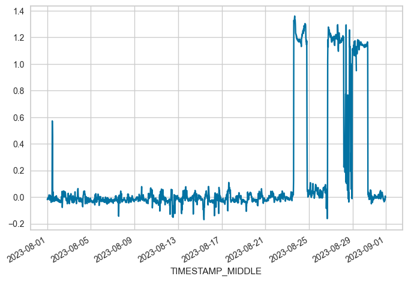
Problematic time periods originally from documentation by YW:
REMOVE_DATES = [
1 ['2021-12-10', '2021-12-23'], # sonic problem
2 ['2022-11-18 00:00', '2022-11-22 00:00'], # sonic w offsets
3 ['2022-12-16 00:00', '2022-12-17 12:00'], # sonic w offsets
4 ['2023-04-17 00:00', '2023-04-20 09:00'], # sonic w offsets
5 ['2023-07-21 16:00', '2023-07-21 21:00'], # sonic w offsets
6 ['2023-08-23 15:00', '2023-08-24 22:00'], # sonic w offsets
7 ['2023-08-26 14:00', '2023-08-30 12:00'], # sonic w offsets
8 ['2023-09-14 00:00', '2023-09-18 19:00'], # sonic w offsets
9 ['2023-09-22 02:00', '2023-09-26 18:00'], # sonic w offsets
10 ['2023-09-28 10:00', '2023-09-29 16:00'] # sonic w offsets
]
2021: not offset issue, use AoA flag#
# Phase 1
FROM = "2021-12-10 00:15"
TO = "2021-12-23 23:45"
locs = (maindf.index >= FROM) & (maindf.index <= TO)
subset = maindf.loc[locs, 'W_UNROT'].copy()
subset.plot(x_compat=True)
print(f"OFFSET betwenn {FROM} and {TO}: {subset.mean()}")
OFFSET betwenn 2021-12-10 00:15 and 2021-12-23 23:45: -0.0359148000680851
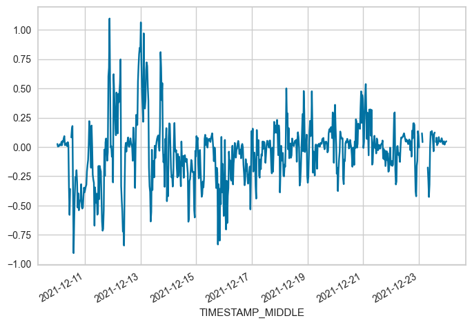
2022: short periods, use with other data#
# Phase 2
FROM = "2022-11-18 04:15"
TO = "2022-11-20 23:45"
locs = (maindf.index >= FROM) & (maindf.index <= TO)
subset = maindf.loc[locs, 'W_UNROT'].copy()
subset.plot(x_compat=True)
print(f"OFFSET betwenn {FROM} and {TO}: {subset.mean()}")
OFFSET betwenn 2022-11-18 04:15 and 2022-11-20 23:45: -1.212554544117647
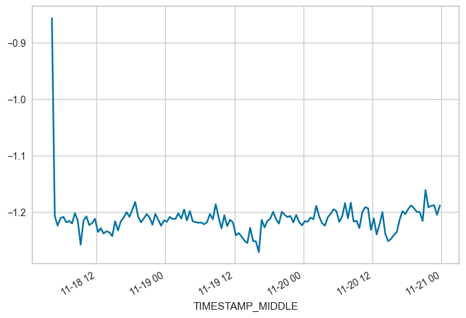
# Phase 3
FROM = "2022-12-16 15:45"
TO = "2022-12-17 07:45"
locs = (maindf.index >= FROM) & (maindf.index <= TO)
subset = maindf.loc[locs, 'W_UNROT'].copy()
subset.plot(x_compat=True)
print(f"OFFSET betwenn {FROM} and {TO}: {subset.mean()}")
OFFSET betwenn 2022-12-16 15:45 and 2022-12-17 07:45: -1.1005000000000003
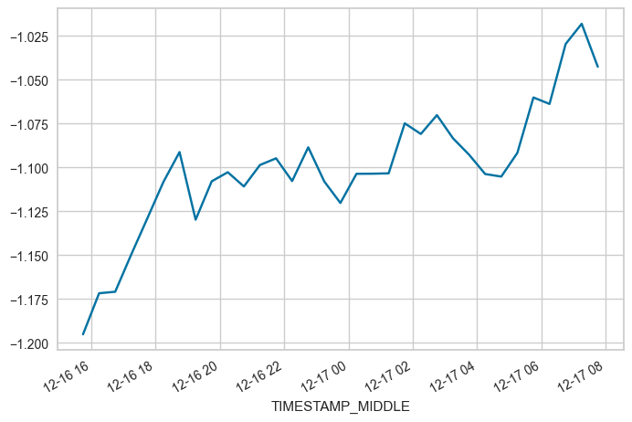
2023: recalculate fluxes using wind speed measurement offset for W in EddyPro#
# Phase 4
FROM = "2023-04-17 10:15"
TO = "2023-04-20 06:15"
locs = (maindf.index >= FROM) & (maindf.index <= TO)
subset = maindf.loc[locs, 'W_UNROT'].copy()
subset.plot(x_compat=True)
print(f"OFFSET between {FROM} and {TO}: {subset.mean()}")
OFFSET between 2023-04-17 10:15 and 2023-04-20 06:15: 1.163599708029197
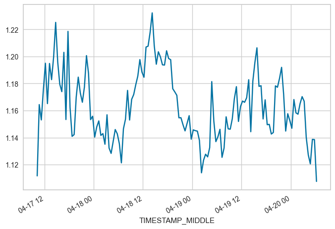
# Phase 5
FROM = "2023-07-21 15:45"
TO = "2023-07-21 18:45"
locs = (maindf.index >= FROM) & (maindf.index <= TO)
subset = maindf.loc[locs, 'W_UNROT'].copy()
subset.plot(x_compat=True)
print(f"OFFSET between {FROM} and {TO}: {subset.mean()}")
OFFSET between 2023-07-21 15:45 and 2023-07-21 18:45: 1.1862112857142857
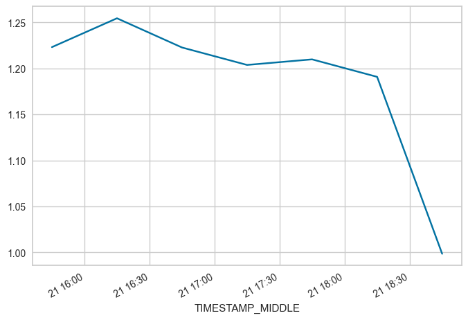
# Phase 6
FROM = "2023-08-23 14:15"
TO = "2023-08-24 18:45"
locs = (maindf.index >= FROM) & (maindf.index <= TO)
subset = maindf.loc[locs, 'W_UNROT'].copy()
subset.plot(x_compat=True)
print(f"OFFSET between {FROM} and {TO}: {subset.mean()}")
OFFSET between 2023-08-23 14:15 and 2023-08-24 18:45: 1.2251075862068965
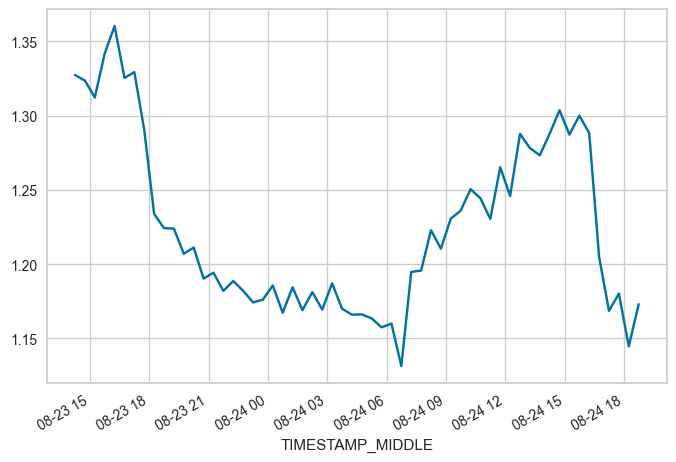
# Phase 7
FROM = "2023-08-26 16:45"
TO = "2023-08-30 08:45"
locs = (maindf.index >= FROM) & (maindf.index <= TO)
subset = maindf.loc[locs, 'W_UNROT'].copy()
subset.plot(x_compat=True)
print(f"OFFSET between {FROM} and {TO}: {subset.mean()}")
OFFSET between 2023-08-26 16:45 and 2023-08-30 08:45: 1.0117830873920455
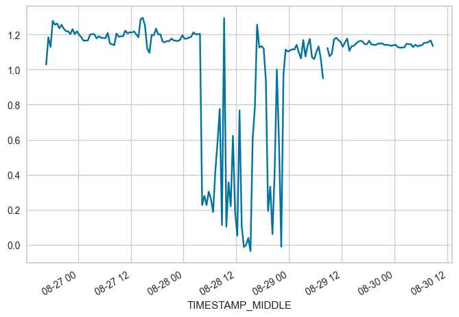
# Phase 8
FROM = "2023-09-14 00:45"
TO = "2023-09-18 15:45"
locs = (maindf.index >= FROM) & (maindf.index <= TO)
subset = maindf.loc[locs, 'W_UNROT'].copy()
subset.plot(x_compat=True)
print(f"OFFSET between {FROM} and {TO}: {subset.mean()}")
OFFSET between 2023-09-14 00:45 and 2023-09-18 15:45: 1.187201864864865
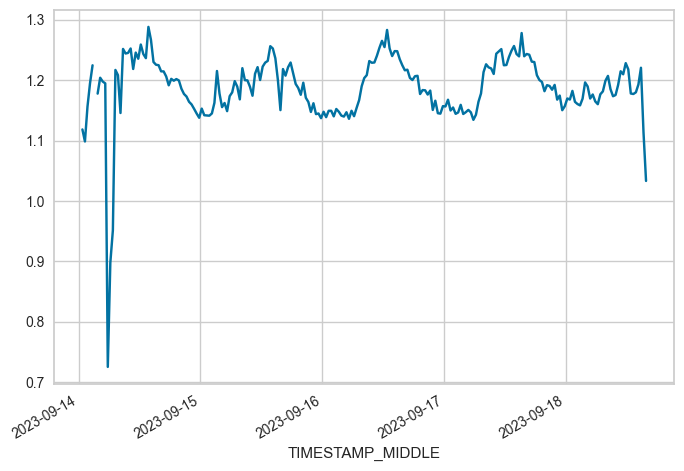
# Phase 9
FROM = "2023-09-22 00:45"
TO = "2023-09-26 14:45"
locs = (maindf.index >= FROM) & (maindf.index <= TO)
subset = maindf.loc[locs, 'W_UNROT'].copy()
subset.plot(x_compat=True)
print(f"OFFSET between {FROM} and {TO}: {subset.mean()}")
OFFSET between 2023-09-22 00:45 and 2023-09-26 14:45: 1.1451817454545454
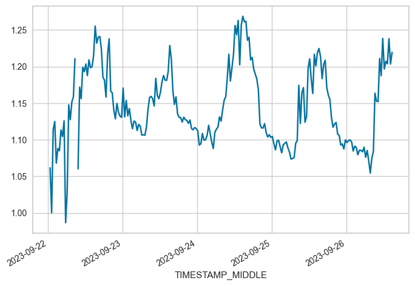
# Phase 10
FROM = "2023-09-28 08:45"
TO = "2023-09-29 14:15"
locs = (maindf.index >= FROM) & (maindf.index <= TO)
subset = maindf.loc[locs, 'W_UNROT'].copy()
subset.plot(x_compat=True)
print(f"OFFSET between {FROM} and {TO}: {subset.mean()}")
OFFSET between 2023-09-28 08:45 and 2023-09-29 14:15: 1.132388540677966
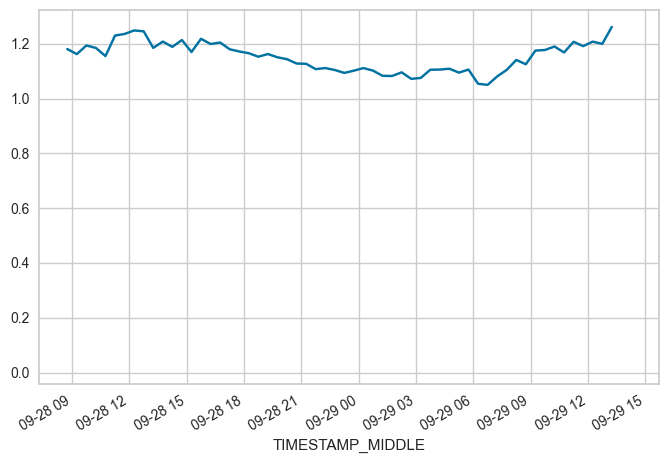
End of notebook#
Congratulations, you reached the end of this notebook! Before you go let’s store your finish time.
dt_string = datetime.now().strftime("%Y-%m-%d %H:%M:%S")
print(f"Finished. {dt_string}")
Finished. 2025-03-01 18:58:19